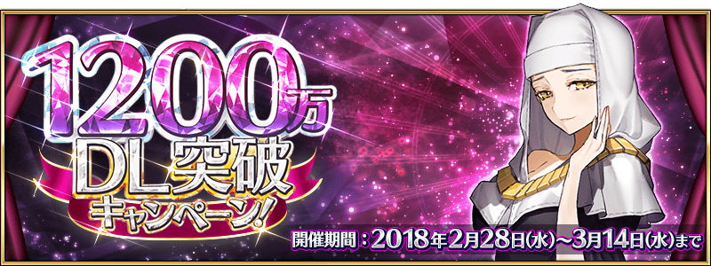
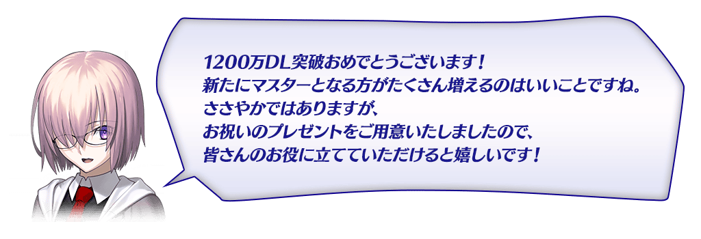
◆舉辦期間◆
2018年2月28日(三) 17:00～3月14日(三) 11:59
舉辦強化Servant能力的特別關卡「Servant強化關卡第8彈」。
本次做為恆常新追加共7位Servant的強化關卡！
詳情請在此處的公告確認。
◆追加時間◆
2018年2月28日(三) 17:00～
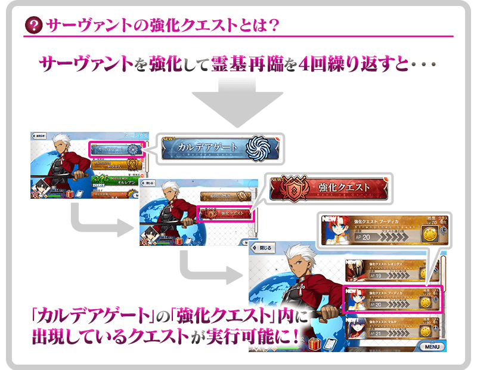
※即使是已開放強化關卡的Servant，未持有做為對象Servant的話，關卡就不會出現。
|
為了記念「1200萬DL突破宣傳活動」舉辦，實施特別登入獎勵。 ◆舉辦期間◆ |
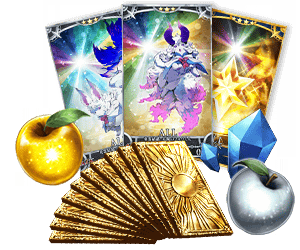 |
◆贈送對象◆
2018年3月7日(三) AM2:59前通過「特異點F 炎上汙染都市 冬木」的Master對象
| 連續登入天數 | 贈送內容 | |
|---|---|---|
| 第1天 | 叡智的猛火 ALL★4(SR) 10張 | |
| 第2天 | 英靈結晶・星之芙芙ALL★3(HP) 10張 | |
| 第3天 | 英靈結晶・太陽之芙芙ALL★3(ATK) 10張 | |
| 第4天 | 白銀果實 10個 | |
| 第5天 | 1,000萬QP | |
| 第6天 | 黃金果實 10個 | |
| 第7天 | 呼符 10張(聖晶石召喚10次份) | |
※第1天的登入獎勵會從3月1日(四) AM3:00配發。
※之後的登入獎勵會在每天AM3:00配發。
※連續登入天數中斷的話，無法領取之後的禮物。
※最多能領取8次，但根據開始遊戲的時間點，可能無法到此上限。
※在上述時間前，於管理室(ターミナル)畫面的關卡橫幅必須要有「CLEAR」的文字顯示。
>關於已開放的所有靈衣，靈衣穿著中的戰鬥時語音會變更成專用語音！
※語音變更成專用語音只限穿著靈衣的情況。
※請注意寶具演出時的語音及一部份的語音並無變化。
◆變更時間◆
2018年2月28日(三) 17:00～
◆靈衣專用語音變更Servant一覧◆
| Servant名 | 靈衣的名稱 | |
|---|---|---|
| 瑪琇・基利艾拉特 | 「常夏的泳裝」 | |
| 女王梅芙 | 「魅惑的獄長樣式」 | |
| 尼祿・克勞狄烏斯(Saber) | 「奧林匹亞的體操服」 | |
| 帕爾瓦蒂 | 「少女的找尋物」 | |
| 阿斯托爾福 | 「於圖利法斯的回憶」 | |
| 貞德〔Alter〕 | 「邪龍之魔女ver新宿1999」 | |
※只有女王梅芙是變化成在期間限定活動「Death Jail・夏日逃脫 ～罪與絶望的梅芙大監獄2017～」做為敵人登場「魅惑的獄長樣式」的寶具演出時語音。
另外，追加戰鬥動作翻新前除了寶具演出時語音以外的戰鬥時語音。
主線關卡亞種特異點(從Ⅰ到Ⅳ)的AP消耗量以期間限定變成1/2になります！
◆舉辦期間◆
2018年2月28日(三) 17:00～3月7日(三) 11:59
◆對象關卡◆
主線關卡亞種特異點(從Ⅰ到Ⅳ)
※請注意自由關卡為對象外。
※在戰鬥中撤退的情況AP的消耗也是1/2。
現在永久舉辦的AP消耗量1/2狀態，再追加AP消耗量1/2，主線關卡第1部(從特異點F到終局特異點)的AP消耗量以期間限定變成1/4！
◆舉辦期間◆
2018年2月28日(三) 17:00～3月7日(三) 11:59
◆對象關卡◆
主線關卡第1部(從特異點F到終局特異點)
※請注意自由關卡為對象外。
※在戰鬥中撤退的情況AP的消耗也是1/4。
在達文西工房的「稀有稜鏡交換」，追加下述的新道具。
◆追加時間◆
2018年2月28日(三) 17:00～
◆稀有稜鏡交換追加概念禮裝◆
| 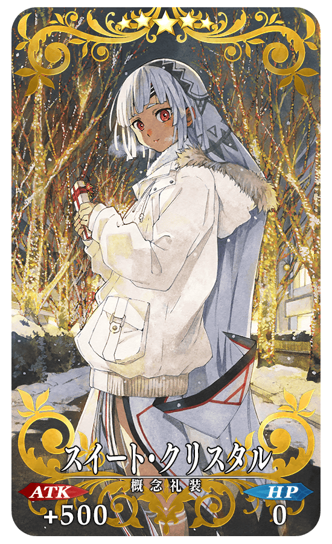 |
★★★★★SSR |
| 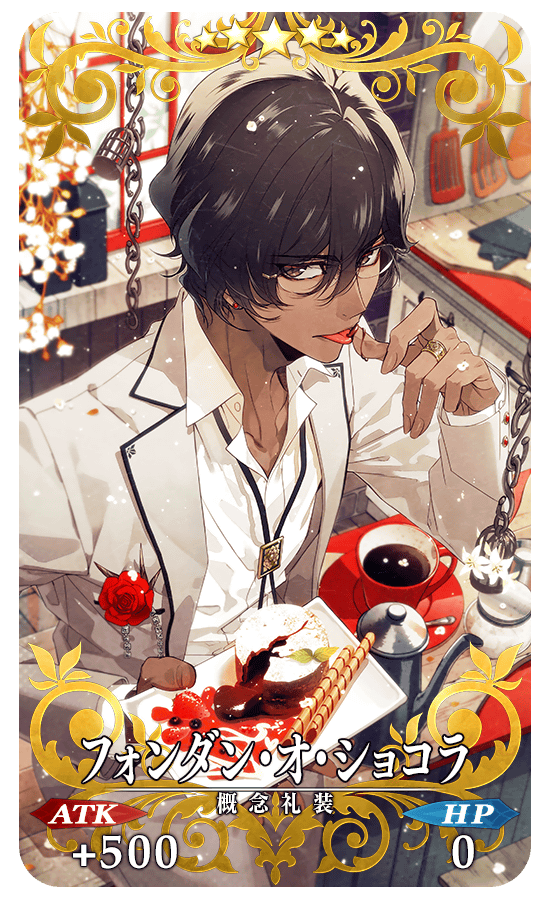 |
★★★★★SSR |
| 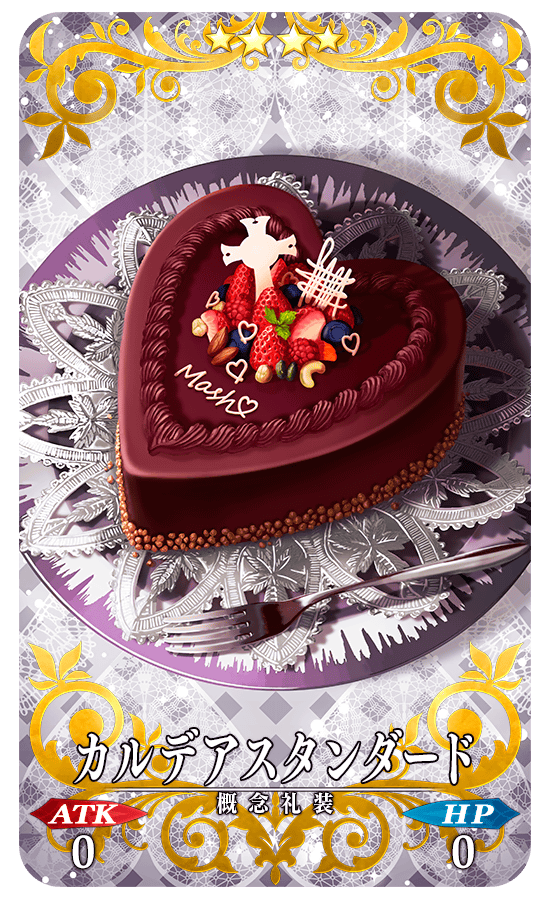 |
★★★★SR |
| 追加道具 | 能交換次數 | 所需的 魔力稜鏡數 |
|---|---|---|
| ★5(SSR)スイート・クリスタル | 5次 |
5個 |
| ★5(SSR)フォンダン・オ・ショコラ | 5次 |
5個 |
| ★4(SR)カルデアスタンダード | 1次 |
3個 |
※追加到「稀有稜鏡交換」的「★5(SSR)スイート・クリスタル」「★5(SSR)フォンダン・オ・ショコラ」「★4(SR)カルデアスタンダード」為常駐，並無交換期限。
※在過去有「★4(SR)カルデアスタンダード」的持有履歷的話，剩餘次數的顯示會是「0次」，無法交換。
請注意做為販賣和強化素材使用的話也無法入手。
※在「稀有稜鏡交換」入手的「★4(SR)カルデアスタンダード」會是最大等級。
每週更新的常設任務「Master任務」可獲得的聖晶片，從2個增量至3個，宣傳活動結束後也恆常化。
通過每週7個的Master任務，可得到最多21個(聖晶石3個份)的聖晶片！
◆變更時間◆
2018年3月4日(日) 23:00～
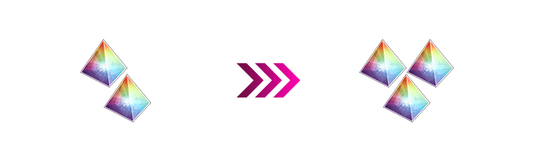
※會自2018年3月4日(日) 23:00更新的Master任務變更報酬的個數。
另外，現在舉辦中(2018年2月25日(日)更新)的Master任務報酬在3月5日(一)以後領取仍為個數變更以前的個數。
※翻新後在遊戲內的幫助圖片中，可於Master任務獲得的聖晶片數仍會顯示2個。關於此處的變更，預定會在近日對應。
就算Servant及概念禮裝的持有數到達上限的狀態，變成也能進行友情點數召喚。
※請注意以到達持有數上限的狀態進行友情點數召喚變成最多+100欄位，Servant或概念禮裝任一邊到達持有數上限＋100欄位的時機就無法進行友情點數召喚。
在進行Servant及概念禮裝的強化時，大成功(經驗值2倍加成)・極大成功(經驗值3倍加成)發生機率以期間限定變成2倍。
無論如何藉此機會強化中意的Servant和概念禮裝吧！
◆舉辦期間◆
2018年2月28日(三) 17:00～3月7日(三) 11:59
Servant強化關卡的AP消耗量以期間限定變成1/2！
※請注意幕間物語及曜日關卡為對象外。
※也包含「Servant強化關卡第8彈」追加的強化關卡。
◆舉辦期間◆
2018年2月28日(三) 17:00～3月7日(三) 11:59
下述對象Servant中，特定的攻擊動作的效果音翻新。
◆對象Servant◆
| Servant名 | |
|---|---|
| ★5(SSR) | |
| 阿爾托莉亞・潘德拉剛(Saber) | 玄奘三藏 |
| ★4(SR) | |
| 阿斯托爾福 | 阿爾托莉亞・潘德拉剛〔Alter〕(Lancer) |
| 阿爾托莉亞・潘德拉剛〔Lily〕 | 安妮・伯妮＆瑪莉・瑞德(Rider) |
| 齊格飛 | 貝奧武夫 |
| 羅摩 | 蘭斯洛特(Berserker) |
| ★3(R) | |
| 蓋烏斯・尤利烏斯・凱撒 | 庫・夫林〔Prototype〕 |
| 大衛 | 大流士三世 |
| 迪爾姆德・奧德利暗 | 弗格斯・馬克・羅伊 |
| 布狄卡 | 赫克特 |
| 亨利・傑基爾＆海德 | 梅菲斯托費勒斯 |
| 呂布奉先 | 羅慕路斯 |
| ★2(UC) | |
| 血斧・埃里克 | 聖喬治 |
| 武藏坊弁慶 | 雷奧尼達一世 |
| ★1(C) | |
| 阿斯忒里歐 | 斯巴達克斯 |
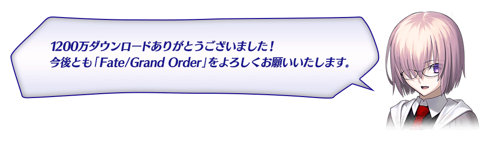
◆「1200萬DL突破記念Pick Up召喚(每日交替)」期間◆
期間:2018年2月28日(三) 17:00～3月14日(三) 11:59
舉辦期間限定「1200萬DL突破記念Pick Up召喚(每日交替)」！
為了記念1200萬DL突破「★5(SSR)殺生院祈荒」「★4(SR)Passionlip」以期間限定登場！
本次包含「★5(SSR)殺生院祈荒」「★4(SR)Passionlip」4位的ServantPick Up！
「★4(SR)鈴鹿御前」「★4(SR)Emiya〔Alter〕」「★4(SR)Passionlip」以每日交替Pick Up，「★5(SSR)殺生院祈荒」常駐Pick Up。
※殺生院祈荒、Passionlip在Pick Up期間結束後不會追加到故事召喚。
※鈴鹿御前、Emiya〔Alter〕在Pick Up期間結束後也會在故事召喚被抽出。
※Pick Up期間中，Emiya〔Alter〕就算通過亞種特異點Ⅰ前也能入手。
詳情請在聖晶石召喚畫面左下的召喚詳細確認。
另外，「Fate/EXTRA CCC特別活動Pick Up召喚」限定概念禮裝「★5(SSR)我らが征くは星の大海」「★4(SR)月の海の生徒会」「★3(R)ザ・ケージ」也以期間限定登場！
※「★3(R)ザ・ケージ」在Pick Up期間中，也能在友情點數召喚獲得。
Pick Up期間中，期間限定Servant、Pick Up Servant、期間限定概念禮裝的出現機率提升！
10次召喚中確定1張★4(SR)以上和確定1位★3(R)以上的Servant！
※確定★4(SR)以上包含Servant和概念禮裝。
※所謂「出現機率提升」意指比同稀有度的Servant及概念禮裝出現機率更高的設定。
| 每日交替Pick Up期間 | 每日交替Pick Up內容 |
|---|---|
| 2月28日(三) 17:00～ 3月1日(四) 22:59 |
殺生院祈荒 Passionlip |
| 3月1日(四) 23:00～3月2日(五) 22:59 | 殺生院祈荒 鈴鹿御前 Emiya〔Alter〕 Passionlip |
| 3月2日(五) 23:00～3月3日(六) 22:59 | 殺生院祈荒 Emiya〔Alter〕 |
| 3月3日(六) 23:00～3月4日(日) 22:59 | 殺生院祈荒 鈴鹿御前 |
| 3月4日(日) 23:00～ 3月6日(二) 22:59 |
殺生院祈荒 Passionlip |
| 3月6日(二) 23:00～ 3月8日(四) 22:59 |
殺生院祈荒 鈴鹿御前 Emiya〔Alter〕 Passionlip |
| 3月8日(四) 23:00～3月9日(五) 22:59 | 殺生院祈荒 Emiya〔Alter〕 |
| 3月9日(五) 23:00～3月10日(六) 22:59 | 殺生院祈荒 鈴鹿御前 |
| 3月10日(六) 23:00～ 3月12日(一) 22:59 |
殺生院祈荒 Passionlip |
| 3月12日(一) 23:00～ 3月14日(三) 11:59 |
殺生院祈荒 鈴鹿御前 Emiya〔Alter〕 Passionlip |
※請注意會以每日交替變更Pick Up的Servant。
介紹期間限定Servant殺生院祈荒的寶具演出！
在「Fate/Grand Order」官方網站內的公告中，公開了「★5(SSR)殺生院祈荒」的寶具演出。敬請確認。
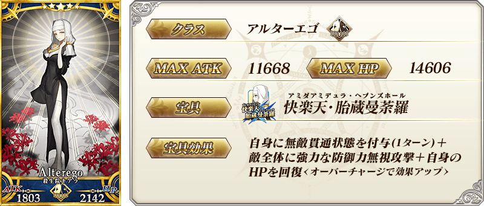
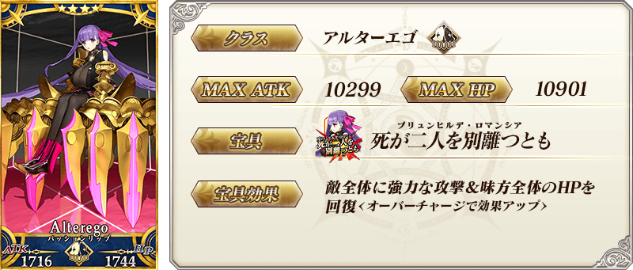
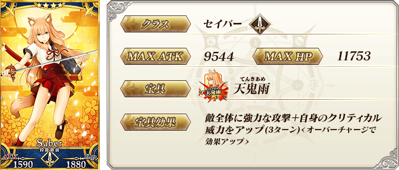

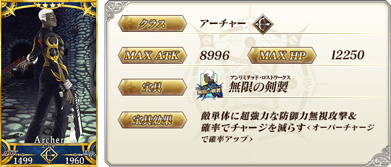
| 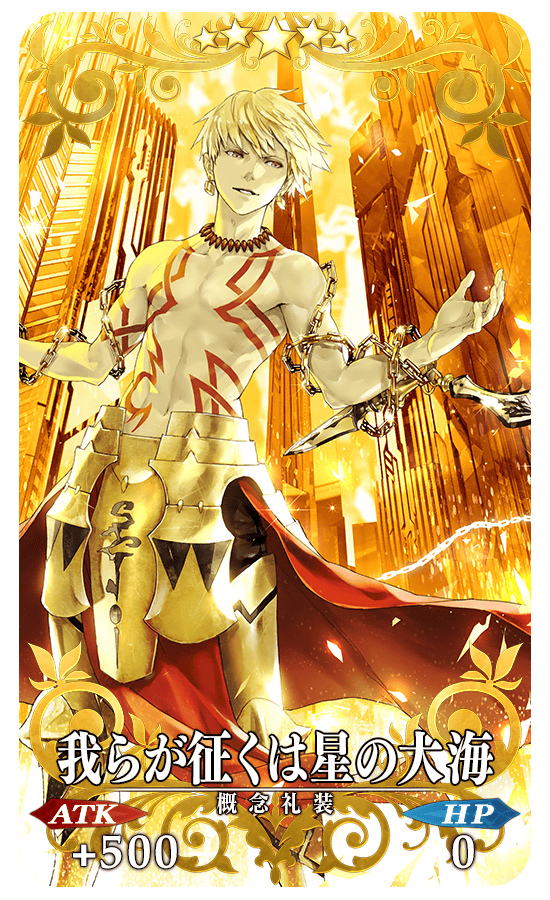 |
★★★★★SSR |
| 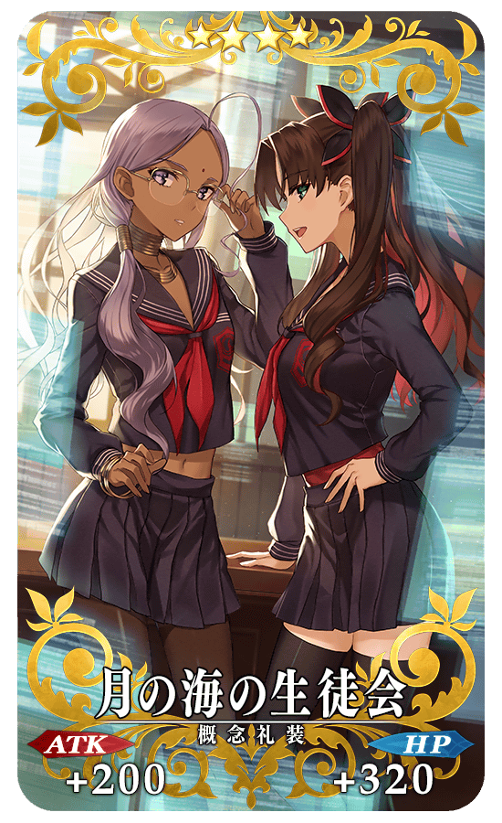 |
★★★★SR |
| 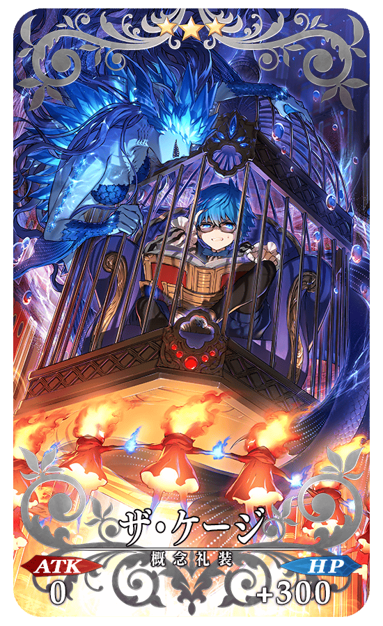 |
★★★R |
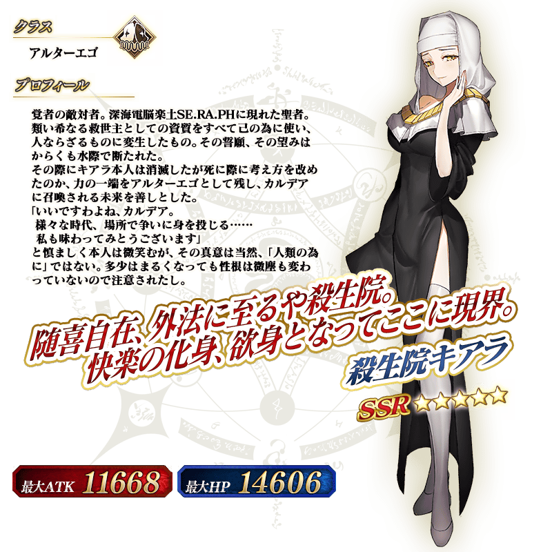
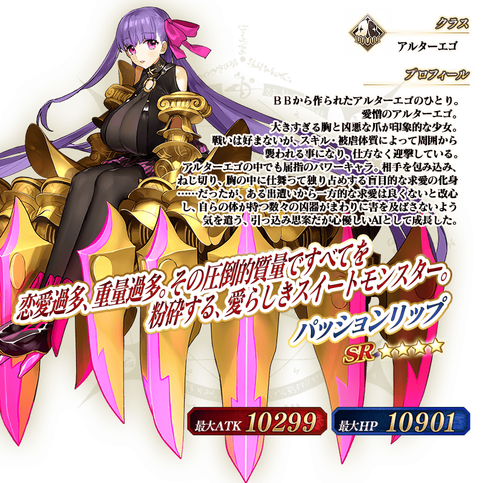